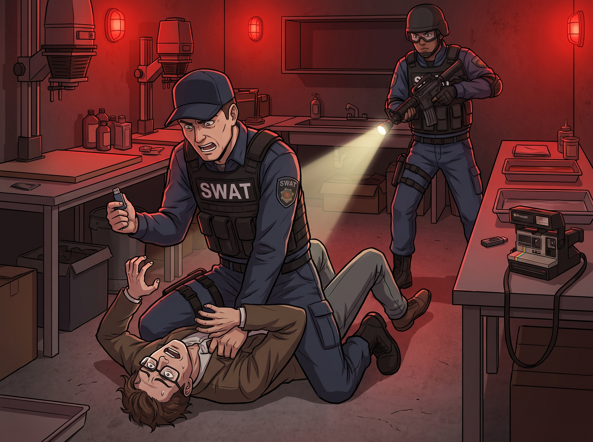

行政地獄

在我們這個「阿卡迪亞灣與 Chloe 雙雙存活」的奇蹟 AU 時間線裡，Max 付出了極大的代價，透過完美的照片跳躍，在風暴降臨前將裝滿證據的隨身碟交給了 David Madsen。
David 帶著特警隊直接踢開了暗房的門，將還沒來得及對任何人痛下殺手的 Jefferson 當場按死在水泥地上。
在沒有造成 Max 和 Chloe 實質性死亡的時間線裡，Jefferson 因為 Rachel Amber 死亡案中構成包庇與湮滅證據的共犯、綁架、非法監禁等多項聯邦重罪，被判處連續兩次終身監禁，外加 150 年有期徒刑，不得假釋。他被關押在俄勒岡州最高安全級別的州立監獄裡。
這聽起來已經是罪有應得的結局了。如果二號車廂沒有招募那個戴著圓框眼鏡的實習生，Jefferson 的下半生或許就是每天在牢房裡看看書，甚至還能利用他的「前知名攝影師」光環，在監獄裡教教繪畫，寫寫回憶錄，過著平靜的牢獄生活。
但很可惜，Lily 翻閱了那段黑歷史。
一、實習生的跨州行政處刑
當 Lily 得知這個被稱為 Jefferson 的男人，曾經對她的四位學姐做過什麼令人髮指的惡行後，她沒有像 Chloe 當年那樣大吼大叫著要拿槍去劫獄殺人。
她只是溫柔地推了推眼鏡，打開了華盛頓州與俄勒岡州的跨州行政聯網系統。
在接下來的兩年裡，俄勒岡州立監獄裡發生了一系列針對囚犯 Mark Jefferson 的、完全合法合規、卻極度令人崩潰的「行政意外」：
1. 藝術靈魂的物理閹割 Jefferson 一直以高雅藝術家自居，甚至企圖在獄中出版他的《暗影與光：我的攝影哲學》。 但 Lily 動用了 Victoria 的海外空殼公司，合法收購了這家準備幫他出版的小型出版社。隨後，Lily 行使了絕對的版權修改權。 當 Jefferson 滿心歡喜地拿到監獄圖書館寄來的樣書時，他差點氣到腦充血——他的名字被改成了「無名三流罪犯」，他那些引以為傲的黑白攝影作品，被 Lily 免費授權給了西雅圖最大的痔瘡藥膏和成人紙尿褲的廣告商。他的藝術生涯，被徹底釘在了屎尿屁的恥辱柱上。
2. 「薛丁格的監獄帳戶」 Jefferson 在監獄裡的日用品和額外食物，全靠他的監獄小賣部帳戶（Commissary Account）。 Lily 寫了一個小程式，每當這個帳戶裡有超過 10 美金的匯款時，程式就會自動向美國國稅局（IRS）與俄勒岡州反洗錢機構發送一份極其詳盡的「可疑資金來源匿名舉報信」。 結果就是，Jefferson 的帳戶每隔三天就會被行政凍結一次。整整兩年，他連一條乾淨的毛巾和一包速溶咖啡都買不到，只能使用監獄配發的、磨破皮的粗糙衛生紙。
3. 合法的「睡眠剝奪轉移」 這才是最殘忍的黑魔法。 Lily 發現了俄勒岡州懲教署一個關於「囚犯心理健康與環境適應」的官僚條款。她每隔兩個半月，就會以「關心囚犯心理健康、防止其建立幫派勢力」為由，利用多個虛擬 NGO 組織向監獄長信箱發送極度專業的評估報告。 於是，每當 Jefferson 剛適應了一個牢房的床鋪，他就會在凌晨三點被獄警叫醒，強制轉移到另一個牢房。有時是漏水的地下層，有時是緊挨著發電機的噪音區。他永遠無法獲得超過兩個月的安穩睡眠，且所有的轉移手續都完美符合監獄的安全章程。
二、惡魔的最終下場
三年後的某個下午，David Madsen 給 Chloe 打來了視訊電話。
「Chloe，妳們猜我今天去俄勒岡州開會，順便去監獄看那個混蛋時看到了什麼？」David 雖然滿臉嚴肅，但眼底卻閃爍著極度舒適的光芒，「Jefferson 瘋了。」
「瘋了？」Max 湊到鏡頭前。
「字面意義上的瘋了。」David 搖了搖頭，語氣裡充滿了對某種未知力量的敬畏，「他跪在探視室的玻璃前，求我幫他請律師。他說有一股看不見的邪惡力量在折磨他，他的帳戶永遠被凍結，他的床鋪永遠在搬家，甚至連他訂閱的《國家地理》雜誌，裡面所有的女性照片都會被人工塗成一隻粉色的巨大浣熊。」
David 嚥了一口口水，壓低了聲音：「他還說，他寧願被妳們當初一槍打死，也不想再面對這種『無盡的行政地獄』了。老實交代，這是不是妳們那個實習生幹的？」
螢幕這邊，Chloe、Max 和 Victoria 同時打了個寒顫，然後整齊劃一地將目光投向了正在廚房裡幫 Kate 擠奶油花的 Lily。
Lily 感受到了目光，回過頭，沾著一點麵粉的小臉上露出了一個無比純潔、人畜無害的笑容。
「學姐們，怎麼了？」Lily 軟糯地問道，「我剛才好像聽到了那個壞老師的名字。他現在在監獄裡過得好嗎？一定每天都在為自己的罪行感到深深的懺悔吧？」
「他……懺悔得快要上吊了，Lily。」Max 艱難地回答。
「那就好。」Lily 滿意地轉過頭，繼續專心對付手裡的奶油，「惡人就應該接受愛與和平的制裁呢。」
二號車廂裡，三人默默地端起茶杯，在心裡為那個曾經不可一世的變態老師畫了個十字架。在阿卡迪亞灣，Jefferson 是個掌控生死的惡魔；但在西雅圖的二號車廂面前，他只不過是實習生用來測試「如何合法逼瘋一個人類」的底層代碼罷了。